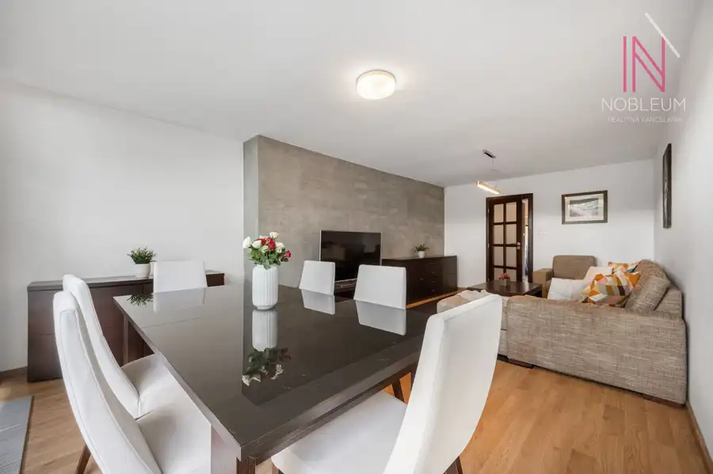
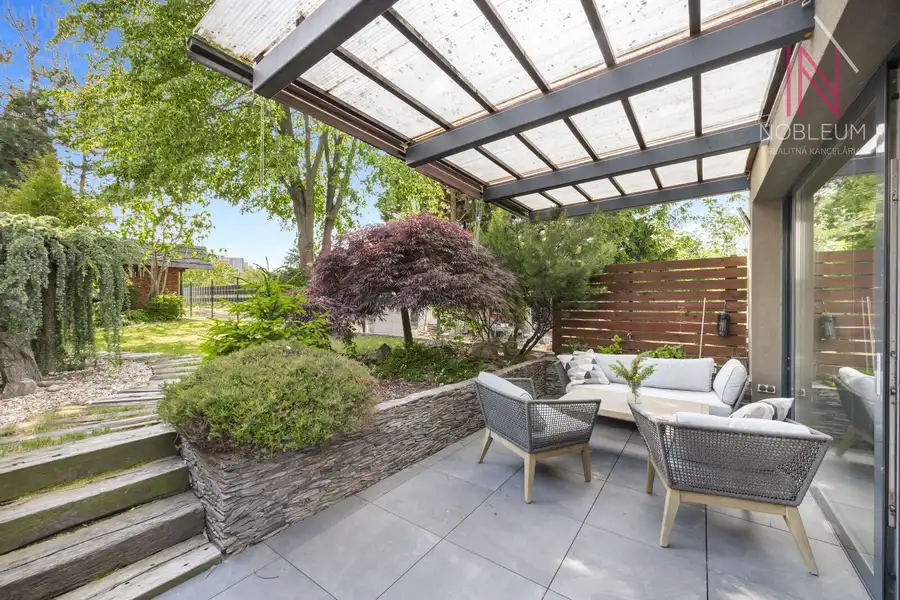
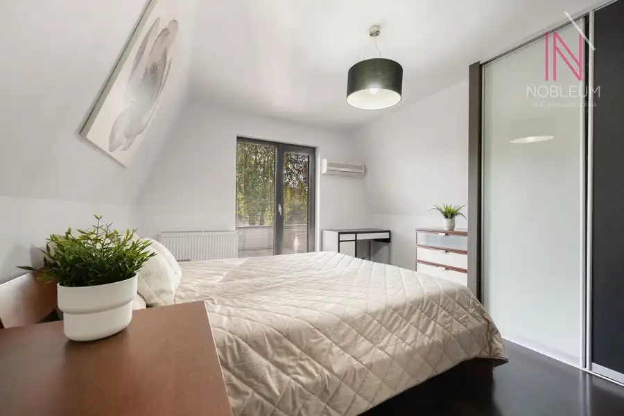
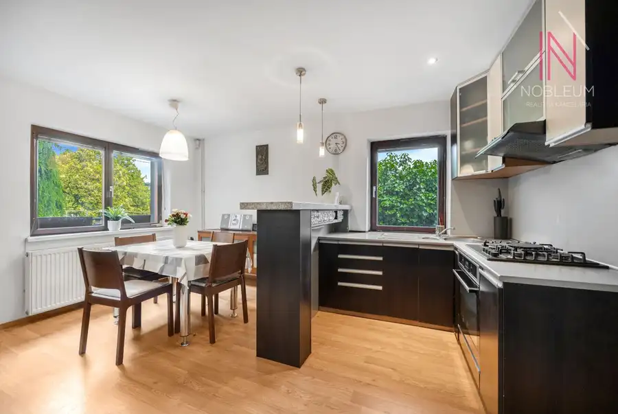
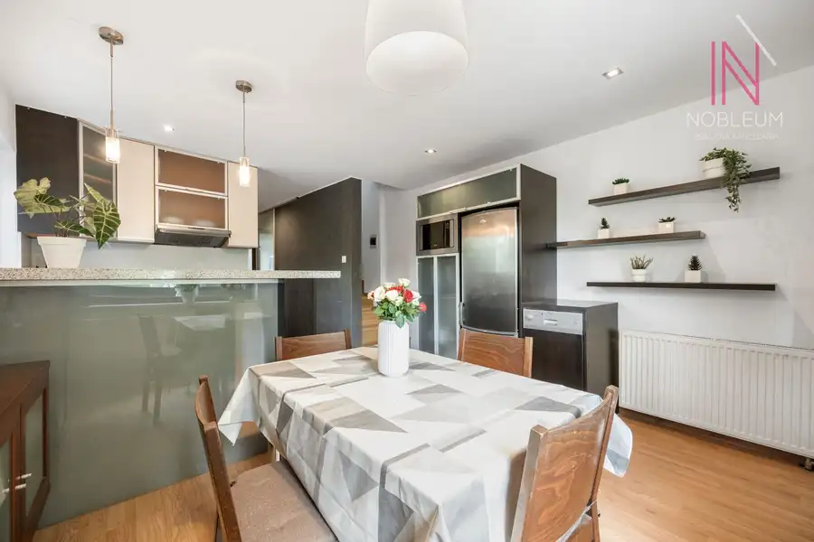
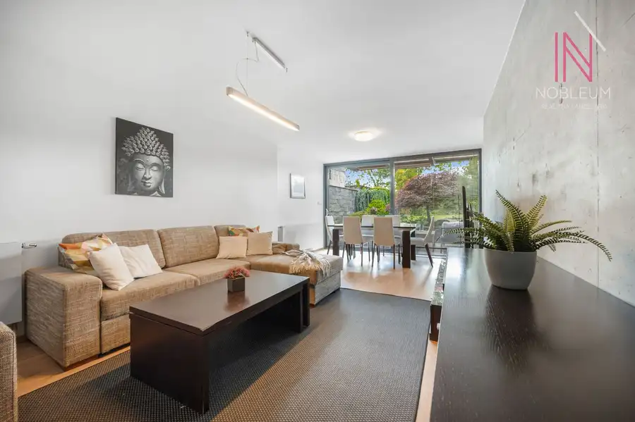
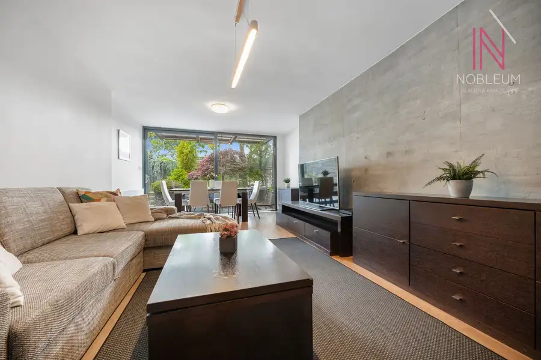
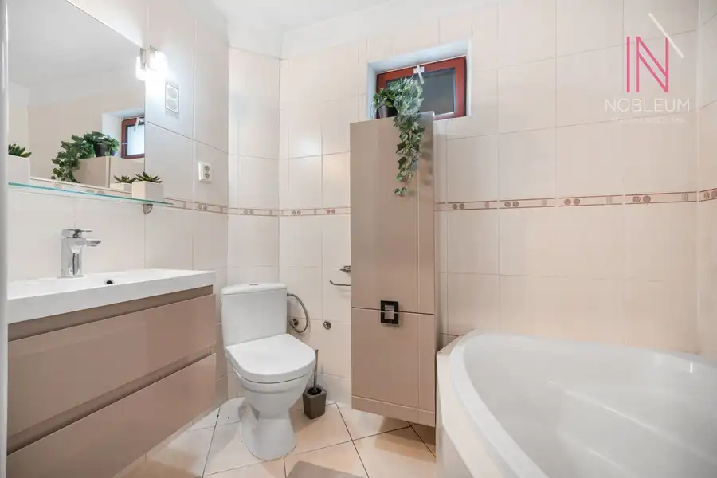
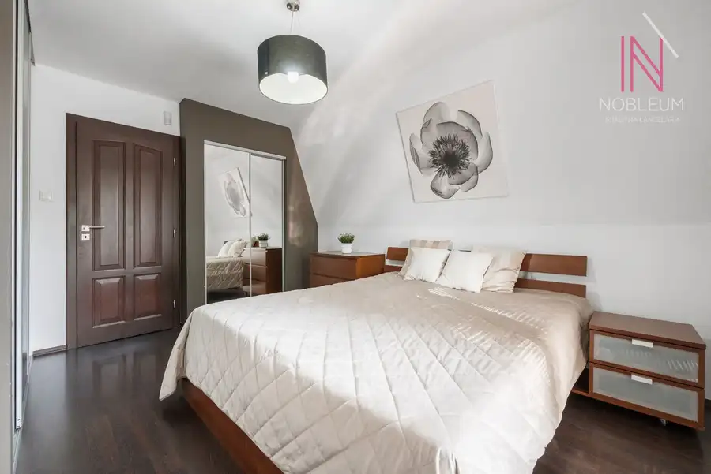

3-izbový dom so záhradou, terasou a bazénom - Bratislava, Dúbravka
Dúbravka, Bratislava









- Plocha97 m²
- StavKompletná rekonštrukcia
- VlastníctvoOsobné
O nehnuteľnosti
Exkluzívne v zastúpení majiteľa ponúkame na predaj útulný 3-izbový dom s bazénom, záhradou a terasou v jednej z najvyhľadávanejších lokalít Bratislavy – v Dúbravke, na ulici Na Vrátkach. Miesto, kde každý večer sledujete západ slnka priamo zo svojej terasy.Výmera:- pozemok: 799 m2- zastavaná plocha: 73 m2- úžitková plocha domu 97 m2Dom prešiel postupnou a dôkladnou rekonštrukciou od roku 2007 – menila sa strešná krytina, plynový kotol, elektroinštalácia aj zateplenie celého domu. Výsledok hovorí sám za seba: mesačné náklady na energie dosahujú len cca 100 €, čo je pri takejto nehnuteľnosti skutočne výnimočné.Dispozícia je premyslená pre pohodlný každodenný život aj kvalitný oddych. Na prízemí nájdete priestrannú obývačku s priamym výstupom na terasu, kuchyňu s jedálenskou časťou a kúpeľňu s vaňou. Kuchyňa je vybavená umývačkou riadu, chladničkou s mrazničkou a plynovým sporákom. Dom sa predáva sa komplet zariadený. Poschodie ponúka spálňu s klimatizáciou a výstupom na terasu, sprchovací kút a ďalšiu izbu. Kúrenie je ústredné a plynový kotol bol menený pred približne 6 rokmi. Celý dom je podpivničený – pivnica je upravená na príjemné posedenie s pieckou, ktoré v chladných večeroch vytvoria atmosféru, akú v byte jednoducho nezažijete. Na pozemku sa nachádza záhradný domček s rozlohou 22 m² s elektroinštaláciou 380 V – ideálny ako dielňa pre kutilov alebo praktický sklad.Dom je napojený na siete – plyn, elektrinu aj vodu. Na pozemku je žumpa. Dom je zabezpečený alarmom, okná v obývačke aj spálni sú hliníkové, hore v izbe drevené.Záhrada je skutočnou perlou tejto nehnuteľnosti. Starostlivo vysadená zeleň vytvára súkromný zelený raj, bazén s filtráciou a nové oplotenie robia z pozemku ideálne miesto na letné dni s rodinou či priateľmi. Orientácia na juhozápad zaručuje dostatok slnka počas celého dňa.Dom je na liste vlastníctva vedený ako záhradná chata s prideleným súpisným číslom, čo umožňuje zriadenie trvalého pobytu.Lokalita Na Vrátkach v Dúbravke ponúka to najlepšie z oboch svetov – pokoj rodinného bývania a zároveň vynikajúcu dostupnosť všetkého, čo každodenný život vyžaduje. Zastávky MHD sú v pešej dostupnosti, s rýchlym napojením do centra Bratislavy aj na ďalšie časti mesta. Priamy prípoj na diaľnicu D1 ocenia najmä tí, ktorí pravidelne cestujú autom – dostanete sa kdekoľvek rýchlo a bez zbytočných objazdov. V blízkosti sa nachádza nemocnica Bory a nákupné centrum Bory Mall s bohatou ponukou obchodov, reštaurácií a služieb, takže bežné nákupy aj voľnočasové aktivity máte vždy po ruke. CENA: 350 000 EUR - V cene je zahrnutý kompletný realitný a právny servis RK NOBLEUMKontakt pre obhliadky: Ing. Jana Mikolášková, tel.: 0908 111 760, e-mail: mikolaskova@nobleum.sk
Parametre
- Druh
- Rodinný dom
- Druh domu
- Klasický dom
- Dátum zverejnenia
- 16. 09. 2026
- Energetický certifikát budovy
- nie je
- Orientácia
- Juhozápadná
- Plocha pozemku
- 799 m²
- Počet nadzemných podlaží
- 2
- Počet podzemných podlaží
- 1
- Stav nehnuteľnosti
- Kompletná rekonštrukcia
- Terén pozemku
- Rovinatý
- Typ
- Predaj
- Typ konštrukcie
- Iná
- Vlastníctvo
- Osobné
- Vybavenie
- Sklad
- Vykurovanie
- Ústredné, Klimatizacia
- Zariadenie
- Zariadené kompletne
- Zastavaná plocha
- 73 m²
- Úžitková plocha
- 97 m²